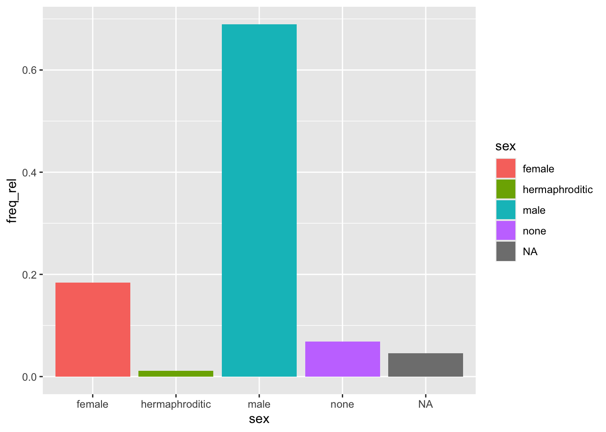
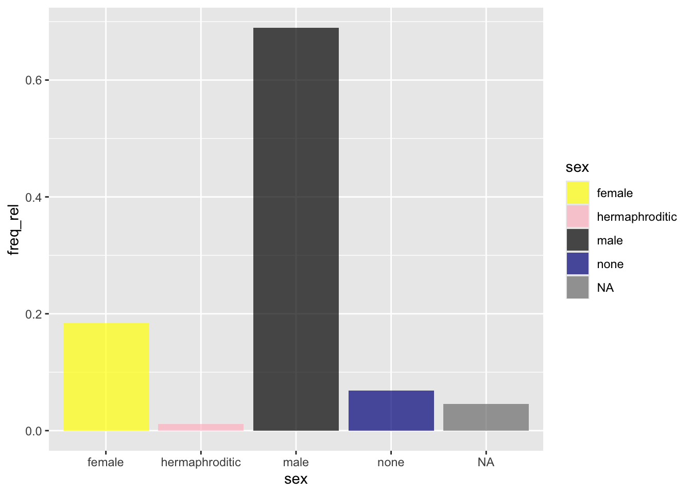

# A tibble: 1 × 14
name height mass hair_color skin_color eye_color birth_year sex gender
<chr> <int> <dbl> <chr> <chr> <chr> <dbl> <chr> <chr>
1 Jabba De… 175 1358 <NA> green-tan… orange 600 herm… mascu…
# ℹ 5 more variables: homeworld <chr>, species <chr>, films <list>,
# vehicles <list>, starships <list>
Gives you the highest mass by sex
starwars |>drop_na(mass) |>slice_max(mass, by = sex)
# A tibble: 5 × 14
name height mass hair_color skin_color eye_color birth_year sex gender
<chr> <int> <dbl> <chr> <chr> <chr> <dbl> <chr> <chr>
1 Grievous 216 159 none brown, wh… green, y… NA male mascu…
2 IG-88 200 140 none metal red 15 none mascu…
3 Beru Whi… 165 75 brown light blue 47 fema… femin…
4 Jabba De… 175 1358 <NA> green-tan… orange 600 herm… mascu…
5 Jek Tono… 180 110 brown fair blue NA <NA> <NA>
# ℹ 5 more variables: homeworld <chr>, species <chr>, films <list>,
# vehicles <list>, starships <list>
Stratified Sample
Obtain a sample with 20% of the database stratified by sex
# filters just by sexstarwars_fm <- starwars |>filter(sex %in%c("male", "female"))# checks how many you have and compute manually how many you are expectingstarwars_fm |>count(sex)
# A tibble: 2 × 2
sex n
<chr> <int>
1 female 16
2 male 60
# takes a stratified samplestarwars |>slice_sample(prop =0.2, by = sex)
# A tibble: 16 × 14
name height mass hair_color skin_color eye_color birth_year sex gender
<chr> <int> <dbl> <chr> <chr> <chr> <dbl> <chr> <chr>
1 Finis V… 170 NA blond fair blue 91 male mascu…
2 Dud Bolt 94 45 none blue, grey yellow NA male mascu…
3 Poggle … 183 80 none green yellow NA male mascu…
4 Bib For… 180 NA none pale pink NA male mascu…
5 Darth V… 202 136 none white yellow 41.9 male mascu…
6 Kit Fis… 196 87 none green black NA male mascu…
7 Bail Pr… 191 NA black tan brown 67 male mascu…
8 Ki-Adi-… 198 82 white pale yellow 92 male mascu…
9 Palpati… 170 75 grey pale yellow 82 male mascu…
10 Owen La… 178 120 brown, gr… light blue 52 male mascu…
11 Yarael … 264 NA none white yellow NA male mascu…
12 Lobot 175 79 none light blue 37 male mascu…
13 R4-P17 96 NA none silver, r… red, blue NA none femin…
14 Shaak Ti 178 57 none red, blue… black NA fema… femin…
15 Leia Or… 150 49 brown light brown 19 fema… femin…
16 Jocasta… 167 NA white fair blue NA fema… femin…
# ℹ 5 more variables: homeworld <chr>, species <chr>, films <list>,
# vehicles <list>, starships <list>
Takes a sample preserving the proportions between the groups.
Some functions are with .by = sex and some are by = sex. Double check before using.
# compute the absolute frequencies of variable sexstarwars |>count(sex, sort =TRUE)
# A tibble: 5 × 2
sex n
<chr> <int>
1 male 60
2 female 16
3 none 6
4 <NA> 4
5 hermaphroditic 1
# Afterwards, include relative frequencyrf_table <- starwars |>count(sex, sort =TRUE) |>mutate("freq_rel"= n /sum(n))# Aftewards, plot the relative frequency with a bar diagram (sorted from highest to lowest freq)starwars |>count(sex, sort =TRUE) |>mutate("freq_rel"= n /sum(n)) |>ggplot() +geom_col(aes(x = sex, y = freq_rel, fill = sex))

Geom_bar is a count, and geom_col is a variable by another variable. Geom_bar you can only include one variable (X or Y).
Changing Color of the Graph
starwars |>count(sex, sort =TRUE) |>mutate("freq_rel"= n /sum(n)) |>ggplot() +geom_col(aes(x = sex, y = freq_rel, fill = sex), alpha =0.7) +scale_fill_manual(values =c("yellow", "pink", "black", "darkblue", "orange"))

concatenate the colors in the order you want them to appear. NA is always grey, so orange is not applied.
# this includes a package for colorblind colors# scale_fill_colorblind()# install.packages("ggthemes")
Calculate how many characters there are of each species, ordered from most to least frequent.
starwars |>count(species, sort=TRUE)
# A tibble: 38 × 2
species n
<chr> <int>
1 Human 35
2 Droid 6
3 <NA> 4
4 Gungan 3
5 Kaminoan 2
6 Mirialan 2
7 Twi'lek 2
8 Wookiee 2
9 Zabrak 2
10 Aleena 1
# ℹ 28 more rows
After eliminating missing variables for weight and height, add a new variable to calculate the BMI of each character, and determine the average BMI of our characters disaggregated by gender.
# A tibble: 5 × 2
sex mean_bmi
<chr> <dbl>
1 female 18.9
2 hermaphroditic 443.
3 male 25.5
4 none 32.7
5 <NA> 24.6
Obtain the youngest character for each gender.
starwars |>drop_na(birth_year) |>slice_min(birth_year, by = gender)
# A tibble: 2 × 14
name height mass hair_color skin_color eye_color birth_year sex gender
<chr> <int> <dbl> <chr> <chr> <chr> <dbl> <chr> <chr>
1 Wicket S… 88 20 brown brown brown 8 male mascu…
2 Leia Org… 150 49 brown light brown 19 fema… femin…
# ℹ 5 more variables: homeworld <chr>, species <chr>, films <list>,
# vehicles <list>, starships <list>
Get the age of the youngest and oldest character of each sex.
starwars |>drop_na(birth_year) |>slice_min(birth_year, by = sex) |>slice_max(birth_year, by = sex)
# A tibble: 4 × 14
name height mass hair_color skin_color eye_color birth_year sex gender
<chr> <int> <dbl> <chr> <chr> <chr> <dbl> <chr> <chr>
1 Wicket S… 88 20 brown brown brown 8 male mascu…
2 IG-88 200 140 none metal red 15 none mascu…
3 Leia Org… 150 49 brown light brown 19 fema… femin…
4 Jabba De… 175 1358 <NA> green-tan… orange 600 herm… mascu…
# ℹ 5 more variables: homeworld <chr>, species <chr>, films <list>,
# vehicles <list>, starships <list>
Determine the number of characters in each decade (take a look at round(), first without disaggregating and then disaggregated by sex.
Rows: 40393 Columns: 16
── Column specification ────────────────────────────────────────────────────────
Delimiter: ","
chr (5): team, league, player, country, position
dbl (11): season, date_birth, minutes_playing, minutes_per_match_playing, go...
ℹ Use `spec()` to retrieve the full column specification for this data.
ℹ Specify the column types or set `show_col_types = FALSE` to quiet this message.
data
# A tibble: 40,393 × 16
season team league player country position date_birth minutes_playing
<dbl> <chr> <chr> <chr> <chr> <chr> <dbl> <dbl>
1 2005 Ajaccio Ligue 1 Djamel Ab… ALG MF 1986 30
2 2005 Ajaccio Ligue 1 Gaspar Az… POR DF 1975 1224
3 2005 Ajaccio Ligue 1 Yacine Be… ALG MF 1981 140
4 2005 Ajaccio Ligue 1 Nicolas B… FRA MF 1976 892
5 2005 Ajaccio Ligue 1 Marcelinh… BRA MF 1971 704
6 2005 Ajaccio Ligue 1 Cyril Cha… FRA FW 1979 1308
7 2005 Ajaccio Ligue 1 Xavier Co… FRA DF 1974 2734
8 2005 Ajaccio Ligue 1 Renaud Co… FRA MF 1980 896
9 2005 Ajaccio Ligue 1 Yohan Dem… FRA DF,MF 1978 2658
10 2005 Ajaccio Ligue 1 Christoph… FRA DF 1973 74
# ℹ 40,383 more rows
# ℹ 8 more variables: minutes_per_match_playing <dbl>, goals <dbl>,
# assist <dbl>, goals_minus_pk <dbl>, pk <dbl>, pk_attemp <dbl>,
# yellow_card <dbl>, red_card <dbl>
The variables capture the following information:
season, team, league: season, team and league.
player, country, position, date_birth: name, country, position and birth of year of each player.
minutes_playing, matches: total minutes playing and 90’ matches played
goals, assist: goals and assists.
pk, pk_attemp, goals_minus_pk: penalties, penalties attempted and goals excluding penalties.
yellow_card, red_card: yellow/red cards.
Include a new variable indicating the age of each player in each season (e.g. if he was born in 1989 and the season is 2017, he is put 18 years old). Place this column after the date of birth.
data |>mutate("playing_age"= season - date_birth) |>relocate(playing_age, .after = date_birth)
# A tibble: 40,393 × 17
season team league player country position date_birth playing_age
<dbl> <chr> <chr> <chr> <chr> <chr> <dbl> <dbl>
1 2005 Ajaccio Ligue 1 Djamel Abdoun ALG MF 1986 19
2 2005 Ajaccio Ligue 1 Gaspar Azevedo POR DF 1975 30
3 2005 Ajaccio Ligue 1 Yacine Bezzaz ALG MF 1981 24
4 2005 Ajaccio Ligue 1 Nicolas Bonnal FRA MF 1976 29
5 2005 Ajaccio Ligue 1 Marcelinho Ca… BRA MF 1971 34
6 2005 Ajaccio Ligue 1 Cyril Chapuis FRA FW 1979 26
7 2005 Ajaccio Ligue 1 Xavier Collin FRA DF 1974 31
8 2005 Ajaccio Ligue 1 Renaud Connen FRA MF 1980 25
9 2005 Ajaccio Ligue 1 Yohan Demont FRA DF,MF 1978 27
10 2005 Ajaccio Ligue 1 Christophe De… FRA DF 1973 32
# ℹ 40,383 more rows
# ℹ 9 more variables: minutes_playing <dbl>, minutes_per_match_playing <dbl>,
# goals <dbl>, assist <dbl>, goals_minus_pk <dbl>, pk <dbl>, pk_attemp <dbl>,
# yellow_card <dbl>, red_card <dbl>